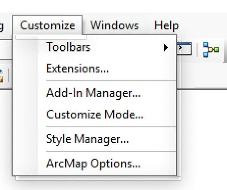
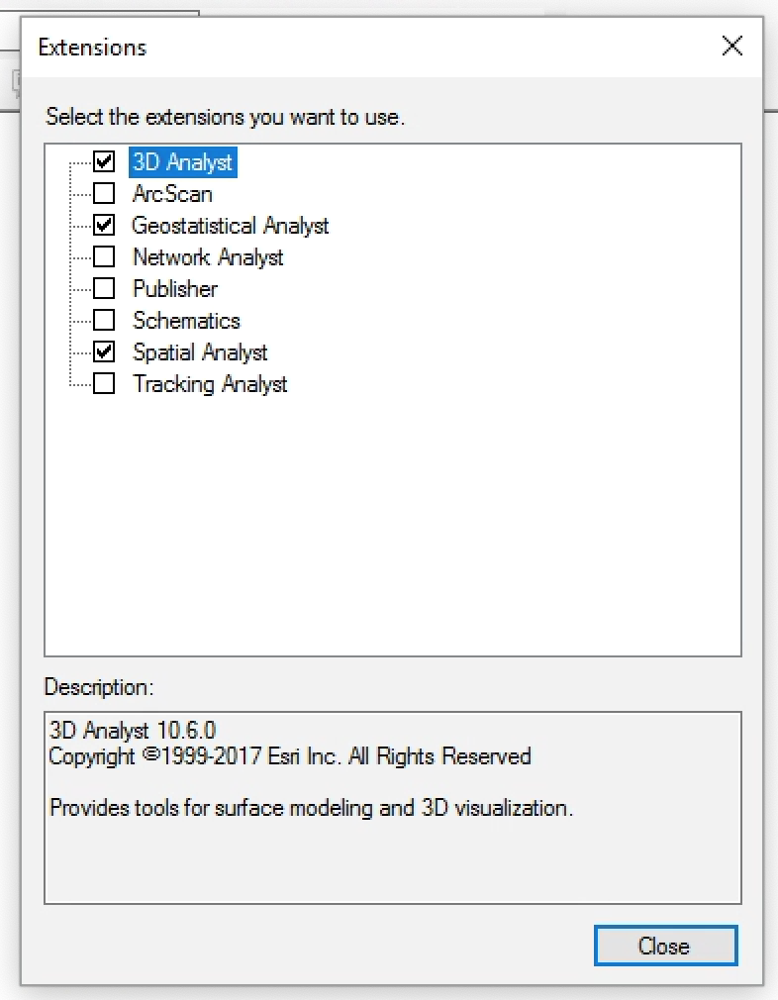

11/11/20
In this practical you will be performing a series of analyses on a point dataset to identify statistically significant spatial patterns. We will be applying techniques discussed in the lecture, including Getis-Ord Gi*.
By the end of this class you should be able to:
Today’s practical only requires one dataset, a point shapefile containing records of sightings of urban raccoons for an area of Portland, Oregon, USA. Datasets like these can be invaluable in the study of species distribution as well as providing insights into controls on wildlife populations.
Download the file geostats_data.zip from QMplus and extract it into a sensible location (either a folder or a GeoDatabase). The zip archive contains:
raccoons.shp - A shapefile containing over 2000 sightings of raccoons in the first 5 months of 1998.You may want to load a basemap using the drop down menu on the Add Data button, to see the observations in their geographical context. Bear in mind that this data is downloaded from the internet and can slow down navigation around the map.
When working on ArcGIS via AppsAnywhere, you will often have to enable some ArcMap extensions before you can run any tools. To do this, click Customize > Extensions... on the toolbar at the top of the window:

In the window that opens, select the options that are checked in the the below image:

It is a good idea to check this before every session working with ArcMap via AppsAnywhere.
When performing a geostatistical analysis, we need to consider how our data is projected. If we use a geographic coordinate system, which represents measurements as degrees, minutes and seconds, distances and areas are not constant across the dataset, which could impact the validity of our results. Instead, we want to use a projected coordinate system, which preserves areas and distances across a dataset.
We will start by checking what type of projection our data has. Load raccoons.shp using the Add Data button, and right click on the layer in the Table of Contents and select Properties. Choose the Source tab and scroll down until you reach the Angular Unit row. As you can see this is listed as Degree, which means we are using a geographic coordinate system.
To reproject this data into a projected coordinate system we can use the Project tool, found in ArcToolbox > Data Management Tools > Projections and Transformations > Project. This tool requires the following parameters:
Input Dataset or Feature Class: Our shapefile data (raccoons.shp)Output Dataset or Feature Class: The path and filename of the projected datasetOutput Coordinate System: NAD_1983_UTM_ZONE_10NGeographic Transformation: WGS_1984_(ITRF00)_To_NAD_1983After running the tool, add the new dataset to the table of contents, and remove the original dataset so we don’t get things confused later.
Before we do anything else, we should make a backup copy of our projected shapefile, as some of the operations we will be performing will modify the dataset. This is always good practice when performing geospatial analyses, to ensure that you can always start again from scratch if things go wrong. Open ArcCatalog and create a copy of the projected data by right clicking on the shapefile, copying it and pasting it into the same folder. Rename the file with the suffix _backup so we know what it is.
Looking at the data, we can see that there are some apparent clusters in the data, with many points that are very close together. Due to the nature of this data, where people have reported sightings, giving the addresses in the attribute table, there is some uncertainty in their precise location. One way to overcome this is to aggregate points that are close together so that they overlap.
Open the Integrate tool, found in ArcToolbox > Data Management Tools > Feature Class > Integrate and select our projected raccoon data as the input feature. We now need to select an XY Tolerance, this is the maximum distance apart that two points can be for them to be integrated together. You need to select this value based on your understanding of the data, a good value in this case will be somewhere around 5 meters. Run the tool, and at first glance it may seem that not much has changed.
Load our backed up data and toggle between the backup and the integrated file to see all the small movements that have happened. You may need to zoom to fully see what has changed. Now remove the backed up data from the table of contents.
Now we can use the Collect Events tool, found in ArcToolbox > Spatial Statistics Tools > Utilities > Collect Events, to aggregate all overlapping points into a single point, scaled by the number of overlaps. Use our projected raccoon data as the input, and choose a sensible output name. Look at the table of contents for the new layer that is created when this tool is run:

The ICOUNT field is a count of the number of overlapping points in a location, and by default ArcMap scales the size of the points based on this attribute, so we can begin to see some patterns emerge in the data.
What areas seem to have the highest incidence of raccoon sightings?
As we learned in the lecture, the scale over which we perform many analyses is important, and the scale choose can influence the results that we see. This is where our expert knowledge of the data comes in, and also the nature of the questions we are trying to answer. For example if we wish to understand where raccoons cluster in a city, we need to consider the typical distance raccoons may travel and any other spatial factors that may be driving the distribution of a phenomena we are studying. In reality this can be difficult to quantify, and there is rarely a ‘right answer’.
One way that we can use the data to identify likely spatial scales, is to perform a series of Moran’s I spatial autocorrelation tests and look at how the Z-scores change with distance. We could do this manually, but luckily ArcMap has a tool that automates this process, Incremental Spatial Autocorrelation, which can be found in ArcToolbox > Spatial Statistics Tools > Analyzing Patterns > Incremental Spatial Autocorrelation. The inputs are as follows:
Input Feature Class: Our aggregated raccoon dataInput Field: ICOUNTNumber of Distance Bands: 10, this is the number of Moran’s I calculations that will be run.Output Report File: This is the output filename, which unlike anything we have done until now, is a pdf. Choose a sensible location and filename for this.All of the other fields can be left as their defaults. After the tool has executed, navigate to the created pdf and open it. It should look something like this

From this graph we can see that there is a peak in the Z-scores identified at around 1400 meters and another at 1700 meters.
Now that we have identified a length scale, we can run a Getis-Ord Gi* test to identify statistically significant hot and cold spots in the data. This allows us to move beyond visual identification of clusters, and say something quantitative about the spatial distribution of our data.
The tool we use is called Hot Spot Analysis (Getis-Ord Gi*) and can be found in ArcToolbox > Spatial Statistics Tools > Mapping Clusters > Hot Spot Analysis (Getis-Ord Gi*). The inputs for this tool are as follows:
Input Feature Class: Our aggregated raccoon dataInput Field: ICOUNTOutput Feature Class: The path and filename of the result of our hot spot analystsConceptualization of Spatial Relationships: FIXED_DISTANCE_BANDDistance Method: EUCLIDEAN_DISTANCEDistance Band: This is the distance we selected from our incremental spatial autocorrelation calculations.The Distance Method indicates how we calculate distances between points, for other types of analysis it may be more appropriate to use MANHATTAN_DISTANCE, which calculates distance between points, following a grid, traveling at right angles, similar to how we navigate a city. We use EUCLIDEAN_DISTANCE, the straight line distance, in this case as we assume that raccoons will take the shortest path between two locations, cutting through gardens rather than following the road layout.
When the tool has completed, a new dataset will be loaded into your table of contents, with statistically significant hot spots coloured red, statistically significant cold spots coloured blue and the beige points are not statistically significant clusters.
Look at the patterns in the data. Compare it to the aggregated data, where points were scaled by number of overlaps. What similarities or differences do you see between these two approaches?
It can often be useful to visualise the results of a clustering analysis by interpolating a raster surface from the discrete point data. We will go into more detail on interpolation in ArcGIS in the next practical, but for now we will use Inverse Distance Weighting (IDW) to convert our point values into a surface. The tool we will use is called IDW and can be found in ArcToolbox > Spatial Analyst Tools > Interpolation > IDW. The inputs are as follows:
Input point features: The output from the hot spot analysisZ value field: GiZScoreOutput raster: The path and filename of the interpolated raster fileSpend some time thinking about how to present this data, what would an appropriate colour scheme be? Does overlaying the point data on top of the surface help? Can you use transparency to show the basemap underneath?